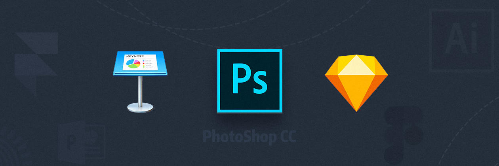
MakicLin
10月20日
第七章：终于要讲软件了
| 本文为付费栏目文章，您已订阅，可阅读全文 |
欢迎回来
上一章，我们结束了设计理论基础的学习，接下来的几章将讲解实践相关的内容，以免亲自上手时不知如何开始。鉴于市面上有许许多多的软件驱动型设计教程，本栏目不会教大家具体如何用某款软件，而是指出正确的方向，对「做什么事情该用什么软件」有概念，以便根据需求选择最合适的软件。好了，请打开你的电脑，了解一下软件。
说到「打开电脑」，你的第一反应可能就是「打开 Ps」。必须承认，Photoshop 是一个多面手，无所不能；但实际上，面对各种设计需求都有比 Photoshop 更加专业，用起来更加舒适的软件。 工欲善其事，必先利其器。Photoshop 不一定是适合你的选择，让我们认识一下主流的平面设计软件吧。
我该用什么软件？
大部分的平面设计软件（甚至交互设计软件）的使用逻辑是如出一辙的，就好比安卓手机的用户，突然用起苹果手机也不会有很大问题。对于软件的选择，逻辑应该是哪款软件适合我要做的事情。下面我将简单介绍几款设计软件的用途，学习成本以及价钱等，为你选择软件提供参考。
PowerPoint、Keynote 等幻灯片制作软件
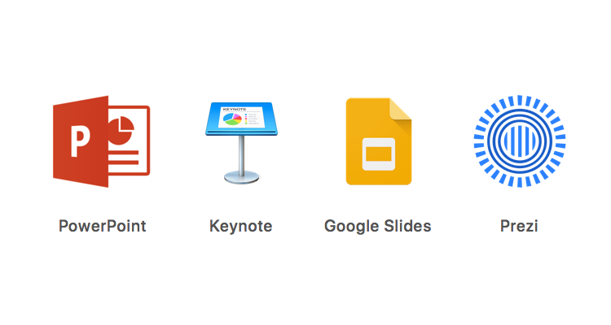
各种幻灯片制作软件
顾名思义，幻灯片制作软件是用来制作幻灯片的。但此类软件的功能已经早超越了幻灯片的范畴，它们可以用来画画、做动画，甚至制作交互原型。在 PowerPoint 之外，还有 Keynote，Google Slides，Prezi 等幻灯片制作软件，但名声最大的无非是微软的 PowerPoint 和苹果的 Keynote。PowerPoint 的功能愈发丰富，有丰富的插件，还兼容了 3D 模型；Keynote 的高级功能可能比 PowerPoint 差了不少，但基础功能却要比 PowerPoint 易用很多。
两者的区别在于：Keynote 着重于基础体验，而 PowerPoint 执着于高级功能。也就是说日常使用中 Keynote 要比 PowerPoint 更加得心应手，PowerPoint 则有许多我们平常人用不到的高级功能。另外，因为 PowerPoint 内置的「艺术效果」和过场动画都相对不够美观，所以对于没有经验的新手，很容易用 PowerPoint 做出一个美感很差的作品。这也是为什么很多人会觉得「Keynote 要比 PowerPoint 好用」的原因。
如果你在幻灯片中用的到 3D 模型，某个特定插件，或者合作伙伴中没有 Mac 用户，PowerPoint 是正确的选择。如果你的合作伙伴习惯使用 Keynote，并且无需 PowerPoint 才有的高级功能，Keynote 通常要比 PowerPoint 舒适许多。
学习成本：★★
幻灯片制作软件的学习成本很低。首先它们比专业设计软件更易上手；其次我们大多接触过 PowerPoint 之类的软件，有使用经验上的优势。 如果你觉得 Photoshop 学起来有难度，可以使用幻灯片软件做平面设计，将其作为学习平面设计软件的开始。不过在你深入学习平面设计之后，你会愈发觉得幻灯片制作软件的功能不够用，比如图层和样式的调节不够方便、没有画板工具、文字无法转成曲线等等，进而转向 Photoshop 和 InDesign 等专业软件。
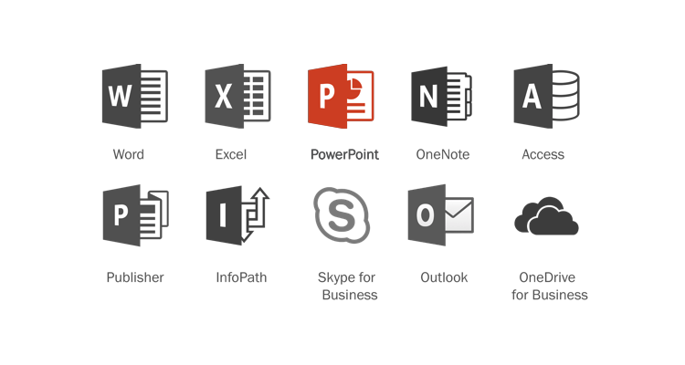
PowerPoint 与 Office 套件
兼容与售价方面，PowerPoint 兼容 Windows 和 macOS 系统，同时拥有 Android 和 iOS 应用以及网页版。哪里都能用，甚至其他幻灯片制作软件也能打得开 .ppt 文件，是最通用的幻灯片软件。但 PowerPoint 是微软 Office 套件的一部分，Word、Excel、Outlook 等软件也需一同买下来。Office 365 个人版官方售价：398 元/年。
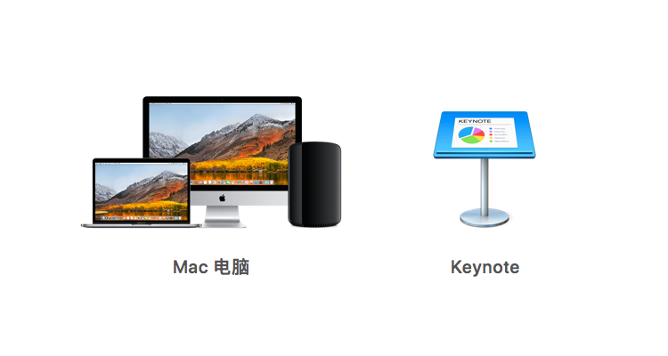
Mac 电脑与 Keynote
Keynote 则只能运行在苹果的生态里，同时拥有 iOS 移动应用以及网页版。Keynote 可以打开 .ppt 文件，也可以保存为 .ppt 格式，但最原汁原味的 .key 文件只有 Keynote 才打的开，所以兼容性需要考虑。价格免费，但需购入一台 Mac 电脑。如果只是想体验一下 Keynote，可以使用苹果帐号登录 iCloud.com 使用功能不完整的网页版 Keynote。
Adobe Photoshop
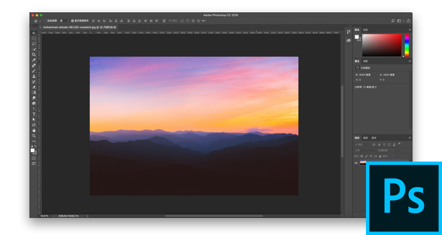
Adobe Photoshop
下面就是顶顶大名的「Ps」，全称 Photoshop。虽然 Photoshop 起初是一款图像处理软件（比如给照片调色、去掉背景中的人、美颜等等），但现在就很难下定义了，它能修图，能画矢量图，能排版，能做视频，还有 3D 功能，只有你想不到没有它做不到。不过，Photoshop 的界面和交互逻辑终归是为了处理图像而设计，所以它最擅长的工作还是处理图像，如果用它剪视频，肯定没有一个专业的视频剪辑软件来的舒服；如果要设计一个文字为主的的名片，Photoshop 不是最好的选择，因为名片上并没有很多图片需要处理。
不过即便如此，Photoshop 提供的功能也足够大多数人使用。这种什么都能做的特性，很适合非专业人员，一个 Photoshop 搞定各种设计，省下了大笔开销和硬盘空间。
学习成本：★★★★
Photoshop 上手相对较难，尤其对于从未接触过的同学，界面会有一种陌生感。不过但一旦学会 Photoshop，Adobe 旗下的其他软件也能用个差不多，尤其是 Illustrator （矢量图绘制）以及 InDesign。所以 Ps 不失为一个通往其他设计软件的入口，是非常值得学习的设计软件。
Photoshop 本身普及程度不低，即便没有安装 Ps 软件，macOS 和 Windows 甚至 Android 和 iOS 系统都有办法查看 Ps 源文件。Photoshop 单独售价 20.99 美元/月；摄影师套餐（Ps + Lightroom）售价9.99 美元/月；Adobe 全家桶售价 52.99 美元/月。
Adobe Illustrator
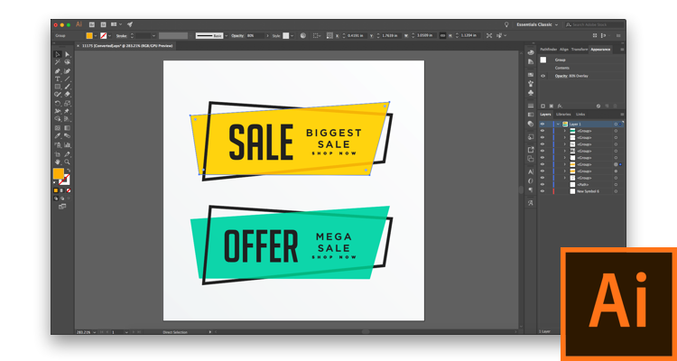
Adobe Illustrator
Adobe Illustrator 长的和 Photoshop 有点像，但不同之处是，Illustrator 是矢量图制作软件（矢量图指的是根据几何特性来绘制图形，可以自由无限制的重新组合，放大后图像不会失真）。Illustrator 的基础工具与 Photoshop 使用方式相同，但几乎没有处理图片编辑能力，也就是说 Illustrator 无法像 Photoshop 一样对付很多设计任务。
学习成本：★★★★
Illustrator 的学习成本与 Photoshop 相当，不过由于 Illustrator 更专注于矢量图制作，学习 Illustrator 并没有学习 Photoshop 有性价比，对于非专业设计者 Illustrator 最大的用处可能是为了打开网上下载的矢量图素材，然后复制粘贴到 Photoshop 里面。不过好消息是一旦学会 Photoshop，Illustrator 也能会个差不多，在学习 Illustrator 之前建议先上手 Photoshop。
Illustrator 所导出的 .svg 和 .eps 格式是可以被其他系统和软件查看和编辑的。Illustrator 和 Photoshop 售价相同，单独售价 20.99 美元/月；Adobe 全家桶售价 52.99 美元/月。
Adobe InDesign
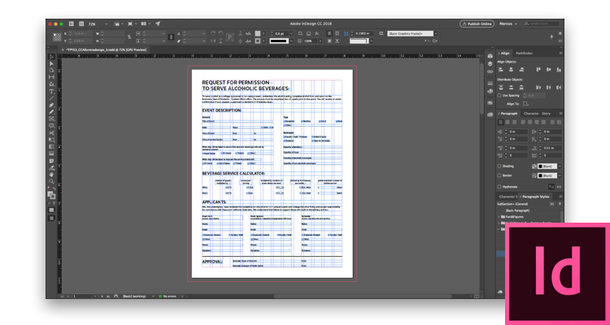
Adobe InDesign
与 Photoshop 操作方法类似的还有 InDesign。这是一款专业的排版软件，有着完善的的风格管理（改变一个元素的长相，文档中与其同类的元素也会跟着更改，大幅提高效率）和更高级的排版功能（如分栏，标点悬挂等）。主要用来做多页面排版设计，比如书籍和五页以上的宣传册等。如果没有多页面排版需求，Photoshop 并不会捉襟见肘。
学习成本：★★★★
单独学习 InDesign 的成本对于非专业设计者来说有点高，并不推荐。如果你要面对多页排版需求或者想达到专业级的排版，InDesign 是你的不二之选。同样，推荐先学习 Photoshop 再上手 InDesign，你会感觉「InDesign 只是一个为了排版而做了功能改进的 Photoshop」，因此就会轻松很多。
由于 InDesign 的普及度不高，可能只有专业设计师和印刷店能打开 .indd 文件。对于没有 InDesign 的用户，仍然可以查看 InDesign 导出的 PDF 文件，但不能修改。InDesign 和 Illustrator 售价相同，单独售价20.99 美元/月；Adobe 全家桶售价 52.99 美元/月。
Sketch 等交互设计软件
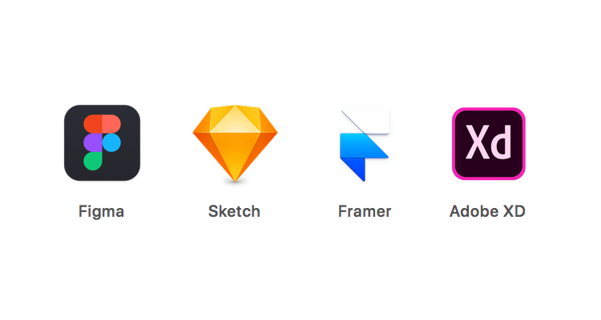
各种交互设计软件
近几年涌现了许许多多的交互原型设计软件，以 Sketch 为首，还有 Figma、Framer、Adobe XD 等同类软件。
他们适合用于设计用户界面（User Interface）和交互原型（Prototype），缺乏专业的排版功能，更不适用设计纸质媒介。
目前主流设计风格偏向简洁与扁平化，使用交互设计软件进行平面设计也并非不可。而且这些软件运行起来要比 Photoshop 以及 InDesign 流畅不少。比如这套教程的图片就是在 Sketch 里面制作的：因为 Sketch 要比庞大的 Photoshop 性能好很多，制作图片的基本功能 Sketch 完全可以满足，Sketch 反而用起来比 Photoshop 甚至 InDesign 舒服。
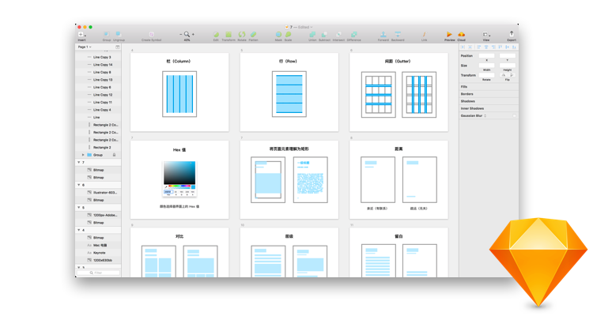
对于简单的需求，使用交互设计软件可能更好
学习成本：★★★
由于不是专业的平面设计软件，他们拥有更少的功能，并且提供更直观的界面，上手难度甚至比 PowerPoint 还要低那么一点。不失为了解平面设计软件基本操作逻辑的好选择。但同时，你也会找到交互设计软件做平面设计也有瓶颈，比如没有色彩管理、对纸质设计不够友好、打印功能缺失等等。如果非要找一个类比的对象，我会说交互设计软件用起来有点像精简过的 Illustrator：更少的功能，更快的速度同时基于矢量图。
兼容方面，交互设计类软件几乎都只兼容自家的格式。而且目前这个领域的软件竞争激烈，种类繁多，迭代也非常快。接下来这个表格将为你展现以上提及的软件特点以及售价：
| 名称 | 用途 | 上手难度 | 特点 |
| PowerPoint | 制作幻灯片 | ★★ | 功能强大的幻灯片制作软件，高级用户能把它当 Ps 用，做平面设计仍有局限。 |
| Keynote | 制作幻灯片 | ★ | 比 PPT 用起来更顺手的幻灯片制作软件，做平面设计仍有局限。 |
| Adobe Photoshop | 图像处理 + 排版 | ★★★★ | 可以应对所有平面设计任务。 学会之后 Adobe 系软件也就触类旁通。 |
| Adobe Illustrator | 矢量图绘制 | ★★★★ | 平面设计功能比较局限，不适合作为上手软件，但很有可能配合 Photoshop 一同使用。 |
| Adobe InDesign | 专业排版 | ★★★★ | 不易上手，但是是专业排版工作者的选择。 |
| Sketch | 交互设计 | ★★★ | 容易上手。可以完成简单的平面设计，也可以作为学习专业平面设计的第一步。只运行在 Mac 电脑上。 |
| Figma | 交互设计 | ★★★ | 和 Sketch 非常类似的交互软件，运行在浏览器中。 |
值得一学的基础功能
无论是 PPT 还是 Photoshop，有些基础功能是所有软件都会有的。熟练这些功能可以保证你在使用同类软件时的效率，同时也能节省学习成本，让我们来了解一下。
注：接下来的内容将在 PowerPoint 中演示，其他软件也有同样功能。
标尺和辅助线（Rules and Guides）
标尺是围在画布上方和左侧的尺子，方便丈量和定位。辅助线则是我们手动创建的线，他们不会显示或打印在最终的作品上，是专门用来辅助对齐的。标尺和辅助线是你构建网格系统的好朋友。
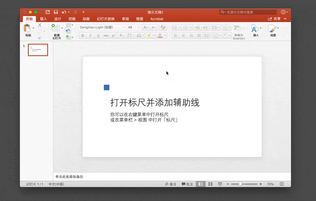
打开标尺并添加辅助线
使用鼠标按住一侧的标尺并向内拉，确定好位置之后再松手，就能建立一个参考线。大家应该记得「对齐」在排版的设计中是非常重要的。同时，软件中也带有智能辅助线，即软件会将你正在移动的元素自动对齐到临近的元素或特定位置（比如画面中央）。这个功能让我们不再需要手动建立那么多辅助线，也能找到我们想要的位置。
对齐工具（Align）
对齐工具可以快速的将多个元素按照指定的方式对齐或分部：比如右对齐，左对齐，垂直平均分部。
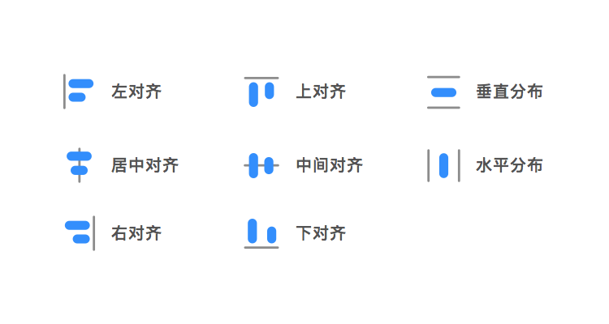
对齐与分布按钮的意义
使用对齐工具，你不再需要手动一个一个的摆放多个元素，只需选中想要「动手」的元素，再确定对齐方式就可以自动完成。
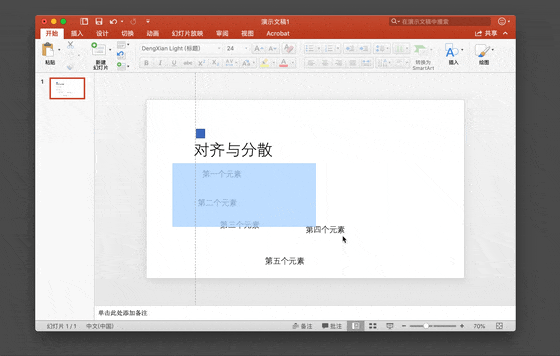
对齐五个分散的元素
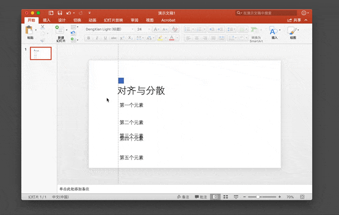
分布刚才那五个对齐的元素
与使用对齐工具类似，先选中要分布的元素，然后选择分布方式即可。这里还有一个小技巧，如果你想让几个元素在一定高度或者宽度下进行等距分布，只需确定好第一个元素和最后一个元素，再选中全部元素进行分布即可。
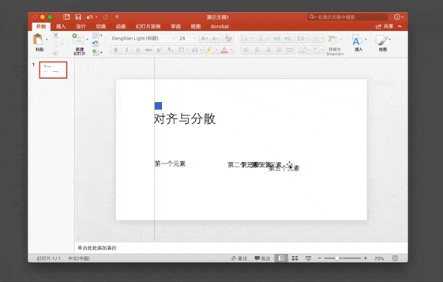
第一和最后一个元素决定分布范围
图层（Layers）
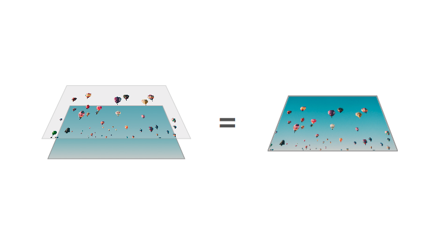
图层概念
图层的概念就如同堆叠在一起的透明纸。你可以透过图层的透明区域看到下面的图层。图层的先后顺序决定了层与层之间的遮挡关系。同时，图层功能也像是一个「页面元素列表」，它以列表的形式将画面中的元素排列起来。
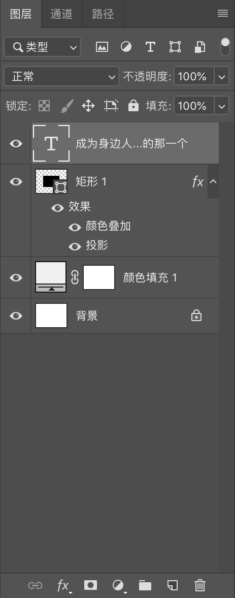
Photoshop 中的图层界面
说到图层，最先出现在你脑海的可能是 Photoshop。因为 Photoshop 的使用非常依赖「图层」这个理念。但其实其他的应用也是有图层功能的，甚至连 PPT 和 Keynote 都有哦。
除了一个一个地拖动图层的顺序，你也可以将多个图层编为一组，成组移动效率更高。同样，已经编好的组也可以和另外的组与元素再编一组。
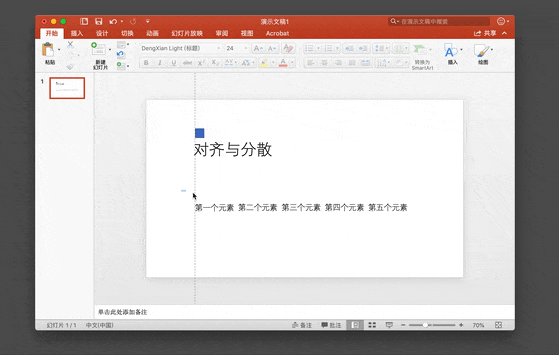
成组移动
样式（Style）
样式指的是各种属性的集合，比如颜色是什么，阴影有多少，描边什么样子等等。一种样式可以应用到多个元素上。
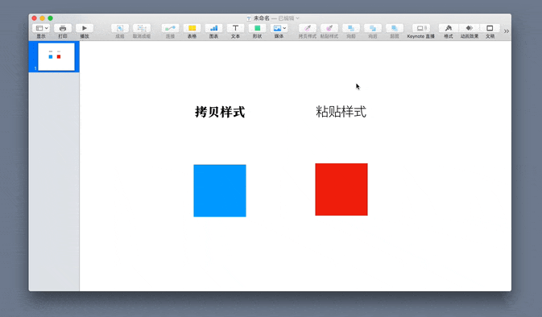
在 Keynote 中复制和粘贴样式
由于页面中经常会有同样风格不同元素，这种情况下使用样式管理工具，就快速地将已有风格应用到其他元素上，不必再设置一遍。几乎所有软件都会有「复制样式」和「粘贴样式」功能。
钢笔工具（Pen）
钢笔工具
钢笔工具是一个看似高深实际简单的绘图工具，能够快速绘制线段、曲线、形状和不规则形状等。钢笔工具基于贝塞尔曲线，简单来说就是用三个点表示一条线，一个作为支点，另两个点决定线的走势。
学会钢笔工具可以帮助你更好地画出自定义的形状，描绘轮廓以及抠图。如果你没有接触过钢笔工具，下面这个网站可以让你十分钟内学会钢笔工具的用法：
蒙版工具（Mask）
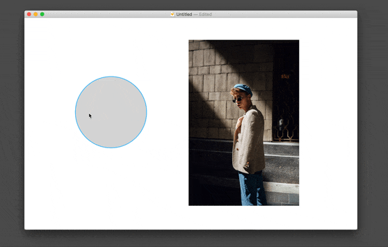
方形图片被应用圆形蒙版
想要把一个方形的图片做成圆形的该怎么办？蒙版工具要派上用场了！与钢笔工具一样，蒙版听上去很高深，其实非常简单。简单来说，蒙版就是给一张图片蒙上「面具」，从而隐藏图片的一些部分。这个「面具」可以是任意形状，如果想要显示一个圆形区域，蒙版就应该是圆形的。
「蒙版」在 Photoshop 大神的手里可是一个利器，听起来不太好入门。其实很简单，比如制作一个圆形头像：即一个方形图片上加一个圆形蒙版，圆形蒙版之外的方形图片就被藏起来，圆形蒙版内的图片显示出来。
在 Photoshop 中，你可以通过将蒙版摆在上层，图片摆在下层的方式，然后在两个图层中间按 alt（option） + 鼠标左键 就能给下面的图层加上一个形状蒙版。想要解开两者的蒙版关系，在此在两个图层中间点击 alt（option） + 鼠标左键 即可。
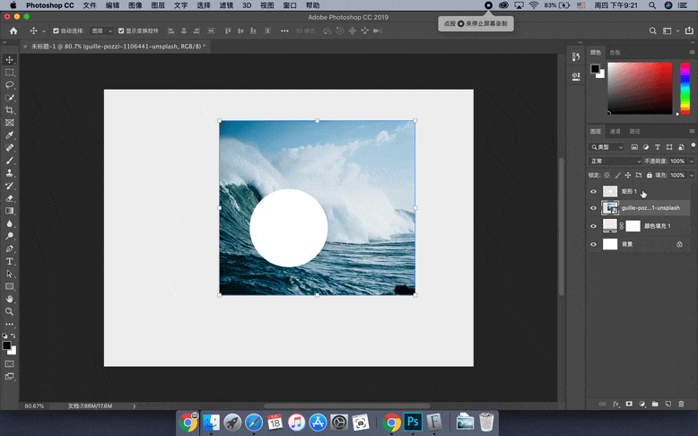
在 Photoshop 中添加蒙版
如何更好地呈现你的设计
在设计完成之前，我们难免要和另一个人或另一组人进行沟通。那么问题来了。如何将你的设计更好地呈现给他人，便于他人与你进行沟通呢？
原图导出
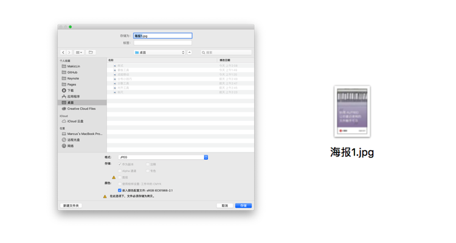
在软件中直接储存图片
这是最通常的做法：将设计软件上显示的内容直接储存或导出成 jpg 或 png 格式的图片，发送给他人看。由于设计方和接受方都是使用的屏幕，所以原图导出的呈现方式更加适合电子媒介，比如一张适用于微信公众号的图片，在手机上直接浏览，所见即所得。
其缺点非常突出：如果我们设计的是一个海报或名片，他人则无法感受到海报的大小，这个时候我们需要使用 Mockup，给他人一些参照。
使用 Mockup

Mockup 展示实际应用效果
Mockup 是一个设计或是设备的模型，用来教学、展示、设计评估、推广或是其他用途，可以是比例模型或和实物一样大的模型。之所以称为「模型」是因为 Mockup 在工业设计、家具设计以及建筑设计等「成果为实体」的行业中也有广泛应用，而 平面设计领域中的 mockup 主要说的是一种「模拟设计应用状态的图片」。为了更好地向他人展示你的设计，尤其是实体的海报，宣传册，名片等等，使用 Mockup 反而比原图导出更加直观，更加有参考价值。
你可以通过在搜索引擎中搜索「场景 + 介质 mockup」找到相应的 Mockup，比如我使用的 Mockup 即是「地铁 海报 mockup」。
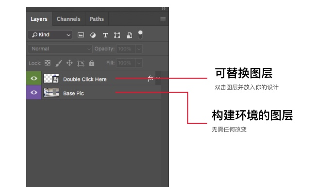
Mockup 的文件结构
Mockup 源文件大多以 Photoshop 文档的形式存在，打开文档后通常会有一个可以替换的图层以及若干用来构建场景的图层。可替换图层通常会命名为「Click here to replace」或者「Place your design here」等，双击该图层将你的设计放入其中，最后导出为普通图片即可。
联系表
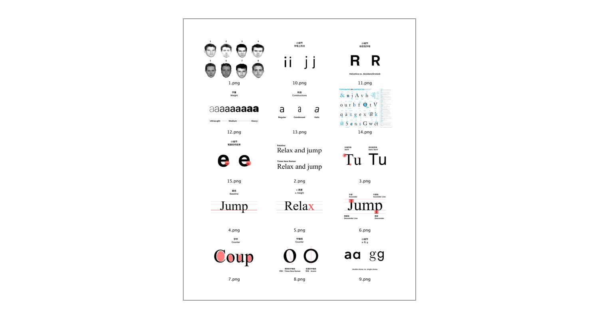
联系表
联系表是指将图片以缩略图的方式排列在一张图片中的形式。这种表格的好处是他人可以对一组图片的样子一目了然，也非常方便进行对比，适合图片较多或者多个图片相似度较大的情况。比如一个设计制作了多个尺寸，或者做了好几个版本，使用联系表展示给他人是聪明的选择。
「自动创建联系表」是 Photoshop 中的一个功能，你可以用任何设计软件创建联系表，但 Photoshop 内置的自动创建联系表功能非常快速。你可以在 Photoshop 顶部菜单栏中的「文件 - 自动」中找到 「联系表 II」，选择要囊括的图片，确定一下整张联系表的大小，等待 Photoshop 自动生成即可。
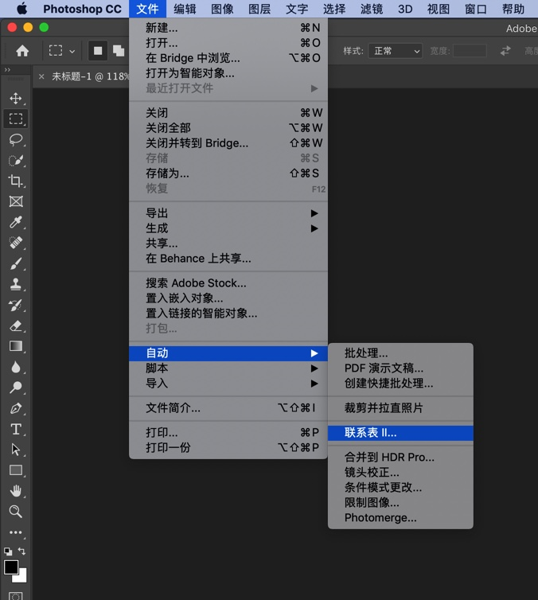
Photoshop 的自动创建联系表功能
打开系统自带的 Automator 应用，并选择「服务」，按照下面的图片建立一个服务并保存即可。
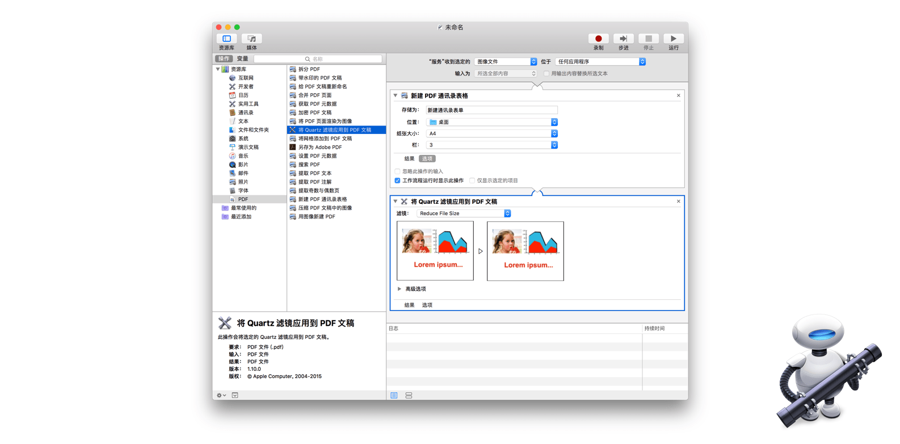
Automator 配置
（在对话框「此操作将更改那些传给它的 PDF 文件。您想添加一个“拷贝访达项目”操作以便更改副本而保留原始文件吗？」出现时，选择「不添加」）。
在保存该服务之后，你便可以在右键菜单中的「服务」子菜单中找到这个服务，选中想要生成联系表的文件，点击这个服务即可。
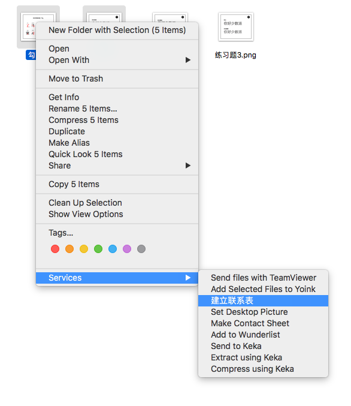
右键点击即可建立联系表
自学软件的建议
你可能要问了，「上面这点软件技巧也不够用啊？」我对于学习设计软件的个人经验是：弄懂收音机结构的最好方式通常是拆掉一个收音机再装回去。简单说就是对于我们不熟练的软件，拿起工具动动手，「玩耍」一下，然后再通过临摹他人的作品学习他人的用法，进而不断了解软件的用法。下面给大家分享一下我是如何「玩耍」的：
入门阶段：熟悉与尝试
刚刚接触一款软件，你可能连各个按钮的功能还不熟悉，这个阶段我建议用你想学的软件，建立新文档，各种工具都按一按试一试，反正不会有什么损失。在玩耍与尝试的过程中你会渐渐熟悉软件的界面，至少知道哪个功能在哪里，是干什么用的。
爬升阶段：临摹
在熟悉了软件的界面之后，则可以开始临摹他人的作品，越像越好。这个过程就像小孩学说话，先是听大人们讲话，逐渐开始模糊的使用大人们的表达方式，然后愈发精确，最终学会说话。学习软件也是同样的，为了达到「和它一样的效果」，你不得不学习「与它一样的用法」，不断临摹就能不断学习新的用法。
举个简单的例子，比如临摹说少数派 Shortcut Gallery 的这张头图：
少数派 Shortcuts Gallery
如果你可以临摹到一模一样的效果，你一定会掌握以下软件技巧：
- 寻找图标，或者绘制图标
- 绘制圆角矩形
- 做出渐变效果
- 做出背景中的砂制效果
熟练阶段：需求推动学习
需求是学习的最佳动力。在你熟悉了软件，掌握了一些技巧，能够独立临摹出他人作品时，便进入了「需求驱动」的阶段。你要主动创造使用这个软件的机会，比如参加设计挑战，帮朋友做名片等。在实际需求中，你会为了达到自己想要的效果去学习一些技法。「需求推动学习」的过程不一定要强迫，如果你对某款软件的需求旺盛，肯定会对这款软件的使用技巧烂熟于心。
推荐阅读
实际上，对于这种界面复杂，操作逻辑相对反锁的专业级软件，我们很难在在没有演示和实例结合的情况下学会，所以我并不推荐阅读软件学习类型的纯文字书籍。反而，每当我遇到遇到软件技术的瓶颈时，下面三个资源通常可以帮我找到答案：
搜索引擎
你遇到的问题通常已经有其他人遇到过，无论是谷歌百度还是必应，你都可以尝试先搜索一下自己想要的问题。比如当你使用 PowerPoint 时，想给文字加一个从白色到灰色的渐变色，你便可以先去搜索引擎中搜索「PowerPoint 文字渐变」。
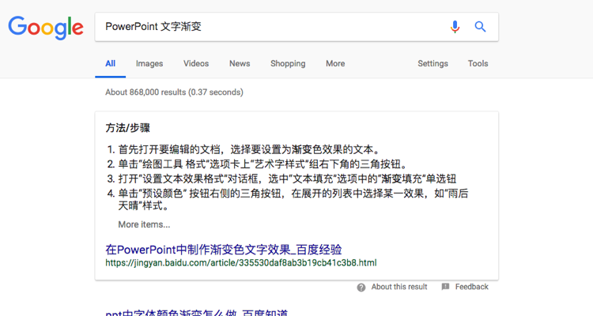
在搜索引擎中搜索「PowerPoint 文字渐变」
通过搜索引擎找到解决问题的办法并不难，无论你处于自学软件的哪个阶段，都不要忘记搜索引擎。
Adobe 帮助中心
Adobe 帮助中心 是 Adobe 旗下的产品，如 Photoshop，illustrator，InDesign 的官方说明书。而且该帮助中心已经建立得非常细致，图文并茂而且完全汉化。当你不会使用 Photoshop 中的特定功能时，来 Adobe 帮助中心阅读一下官方说明书，可以了解很多东西。比如当你不知道如何使用钢笔工具时，可以直接在帮助中心搜索「钢笔」，得到的结果如下图：
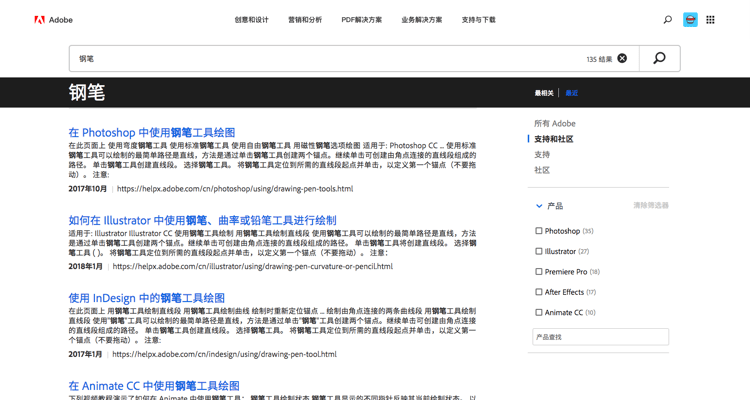
在 Adobe 帮助中心搜索「钢笔」
同样的逻辑，当你使用其他软件时，官方提供的帮助文档也是值得一读的。
UI 中国
UI 中国的教程区
如果你需要做出某个特定的效果，UI 中国的教程区或许能够帮到你。尽管其教程区充满了独立的文章和专题，知识可能还不够成体系，但非常适合解决特定的问题。比如「如何做出挥毫泼溅感毛笔字体」，你便可以找到《用AI设计挥毫泼溅感毛笔字体》，解决这个具体需求。
结语
在学习平面设计的过程中，软件学习可以让我们更快地开始实践。但某一款软件终究不是设计的全部，尤其是在这个设计工具井喷的时代。我建议诸位可以多去尝试各种类型的设计软件，熟悉界面和其特点，入门即可。面对合适的工作挑选合适的软件。对于高级功能，正如上面所说，当你需要的时候，通过搜索和探索，你自然就会掌握它。
这一章我们介绍了一些设计软件，解除了「我该用什么软件」的疑惑；又带来了一些通用的使用技巧；最后分享了我个人的软件学习经验。接下来我们将带着理论与工具，从微信排版开始，一起了解在实际应用的时候，有哪些需要注意的地方。
感谢阅读，我们下一章见。
上一期
下一期
精选评论（0） 我的评论